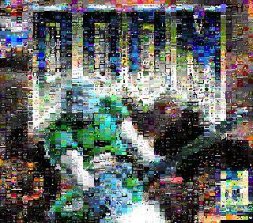
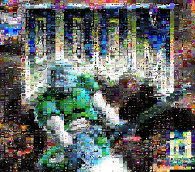
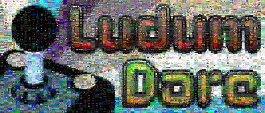
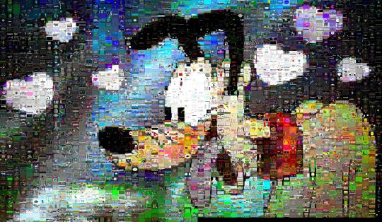
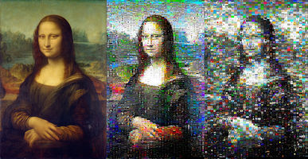
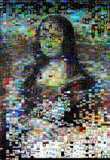
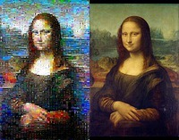

Ludum Dare #35 Mosaic
Its becoming a Ludum Dare tradition that I make a mosaic for each competition. I didn’t enter this time, but I still made a nice mosaic:
Always loved programming - its like Lego without gravity.
Basic on my ZX81 graduating to assembler and Turbo Pascal during my teens.
Developed phone OS software - engineer, architect, product manager - but got made irrelevant by the iPhone and redundant by Android.
These days I mostly work with data, big data and fitting big data onto small boxes.
Its becoming a Ludum Dare tradition that I make a mosaic for each competition. I didn’t enter this time, but I still made a nice mosaic:
Aurel Bílý made this nice wallpaper, and told
us how he did it:
Here are a couple of mosaics I made from the LD32 thumbnails:
(On the left, a target image. On the right, a mosaic made from thumbnails of all the Ludum Dare 32 games, positioned using an MSE score metric.)
Making mosaics is in two steps:
The second part is easy (although I tried imprecise approximations at first, and only discovered it fairly recently): use the Hungarian Algorithm.
Its that first step that’s tricky.
I have been using Mean Square Error (MSE) and have been fairly happy with the result. But readers have pondered if there aren’t better metrics that better account for shape and contrast and such…
So to please some Ludum Darers (and because I was curious), I tried out some algorithms.
First, Peak Signal to Noise Ratio (PSNR) is just a rephrasing of MSE and the results are much the same.
Second, I tried Structural Similarity (SSIM) index. This was a promising avenue to explore. My mosaic maker is Python and there’s a scikit helper, but scikit doesn’t work with pypy (and neither does a stock numpy; trying to get the mosaic maker to work happily in pypy with these kinds of dependencies has been a nightmare). In the end I went with pyssim which turned out to not work in pypy either due to dependencies but I stuck with it on cpython anyway. Its about 4x slower than MSE and most of the cost seems to be comparison overhead and not really affected by how big the patches I compared were.
SSIM is actually working in luma (eh fancy term for grayscale) and trying to account for shape not colour.
The results:
(On the left, the original. In the middle, MSE. And on the right, SSIM. Tiles are the thumbnails of 2819 Ludum Dare 32 games (omitting 2 games with broken thumbnails!))
So I tried blending the MSE and SSIM scores (suitably scaled of course) but couldn’t get even a little bit of SSIM to help:
(Here 70% MSE and 30% SSIM. I even tried 8% SSIM and it looked much the same.)
I also tested using the YCbCr colour-space too; results were much the same (as all the tiles are screenshots they are invariably natively RGB; if the tiles were made from photos there’s a good chance that YUV makes much more sense).
Now I am making a novice interpretation of this but my guess is that in mosaics, which are best viewed from a great distance where the tiles are increasingly pixel-sized, tile colour dominates over shapes within the tile?
I updated my mosaic script to consider rotations of three tiles as well as straight swaps. To be honest, its diminishing returns, but the mosaic is one of the prettiest yet:
Ludum Dare is a really popular game making contest. Three or so times a year several thousand competitors all over the world wait for the theme to be announced and the contest to start!
Last weekend was the 30th contest (LD30) and the theme was “Connected Worlds”.
The voting wasn’t even close, which is a shame as I was very lukewarm to the theme. I feared there’d be lots of platform games where you run two levels in parallel, or can swap between levels, etc.
And that’s what 90% of games are, sadly. I don’t mean they are bad games - many of them are really exceptionally good! - I just mean the theme lent itself to a very literal interpretation.
My interpretation was to try and connect Ludum Darers to the real world instead :)
I recalled that hidden away on the LD website was a map where LDers could record their position on a map. It was not terribly well known, but there were several hundred player’s latitude and longitude in there. It was enough to make sure that any map wasn’t completely empty for the first player…
So I made a ‘game’ where you report your position, and then see other contestants near you and can browse LD games on the real world map.
The game aspect is the gamification of rating LD games. In order to discover the overall LD winner, contestants play each other’s games and rate them. They have 3 weeks to do this, and then the standings are announced. And I wanted to encourage that participation, as there’s really games that go unplayed and contestants that don’t play.
I scrape the LD website and, as a proxy for rating others games, I note who has commented on whom. As well as rating games you can comment on games, and whilst these are distinct they are often done together.
So I draw the map with line art, and use a GL stencil buffer to expose an underlying map where you’ve commented on games or others have commented on your game:
Play it online here! If you’re not an LD player, you can pretend to be!
The map that you expose is illustrated by me and the usual suspect, who goes by the handle Wombatica on the LD site.
I’ve been overwelmed by the popular appeal and compliments! I hadn’t expected to get so many appreciative LDers! I’ve been rated over 150 times already, which is many times the ratings I’ve received on previous contests. People keep coming back, and people keep checking progress.
People are saying the nicest things too! Here’s some of the over-the-top ones :)
- WOW. Now that is original. Genius. I’ll be playing it for the next few weeks.
- Hah, what an awesome idea, gamification of Ludum Dare! This it how I’m going to vote all entries from now, keeps voting fun!
- Thumbs up for innovation/originality!
- super awesome idea, have all my stars!
- Now the fourth wall have been shattered. thank you.
- Will - really, really good job… This should win I think, just for the sheer cheek of subverting the idea and pointing LD at itself, can see this becoming a favourite interface for LD in the future… very great !
- You made playing games a game, that’s a 5 stars on innovation, no doubt. Also, connecting the LD world with the real world… Another 5 stars for theme!
- Man. This is SO neat! This game wins like all of the LDs. Amazing job!
- I gave you an award on your profile for this game.
- Oh my god this is briljant!
Oh there’s more. Lots more :) Now excuse me while I float off ecstatically tired…
As followers of the blog know (thx for the mails!), I’ve been making mosaics of Ludum Dare contest entries. It started basic, and its got better. Each of the ‘pixels’ in the Mona Lisa is actually a screenshot of a game! Here’s how:
We have an target image, for example the Mona Lisa, and we have some large number of small input images which we want to arrange so that, when squinted at from a distance, it approximates the target image.
UPDATE: blog post describing how these mosaics are made
I knew my mosaic script was doing a poor job of placing the images.
The approach it’d be taking was greedy: it’d place the closest matching image on its tile, and then the next closest matching and so on. The outcome in in the middle column above.
After talking a bit with Roy, I couldn’t really leave it doing such a poor job.
So in what way is the greedy approach sub-optimal? It may be that swapping two images or three or more images around will lead to a lower overall error score.
And what’s the simplest improvement to make? Rather than tackling the true dynamic programming or other classic approach to optimisation, I simply went for random swaps.
The script will now perform random swaps if they improve the image, until you interrupt it with ^C.
And the results, as seen in the left column above, are stunning :)
The mosaic is made (sourcecode) from the screenshots from Ludum Dare 29, to the theme “Beneath the Surface”. The green turtle is from wikipedia.
Not a terribly bad likeness? (My code made the top one ;)
Its the over 2000 thumbnails from Ludum Dare 28 (my game entry), placed greedily by MSE. Here’s a little Python script I quickly knocked up.
{kind=link}
{kind=link}
{kind=link}